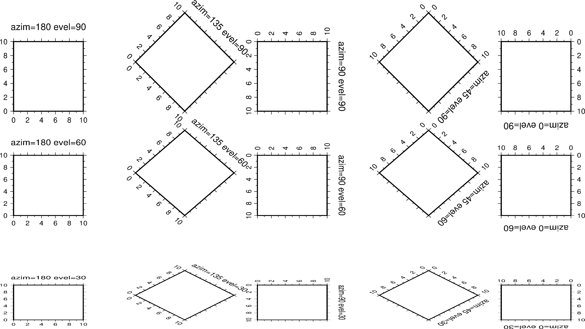
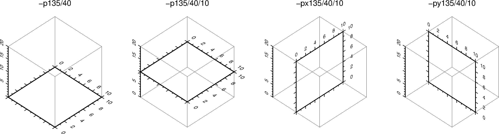

8.19 -p 选项¶
-p 选项用于控制2D底图或3D底图的透视视角。
对于一个2D底图（比如二维平面内的矩形）或者一个3D底图（比如三维空间内的立方体），从不同的方向看时会看到不同的形态。该选项用于控制从怎样的透视视角去看一张图。其语法为:
-p[x|y|z]<azim>[/<elev>[/<zlevel>]][+w<lon0>/<lat0>[/<z0>]][+v<x0>/<y0>]
<azim> 指定视角的方位角，即相对于北方向顺时针旋转的角度，默认值为180。
<elev> 指定视角的海拔，即视角相对于纸张平面向上旋转的角度，其取值范围为
0到90（不含0），其中0表示视角与纸张平面平行，90表示视角垂直于纸张平面，默认值为90。
下图给出了2D底图下透视视角取不同值时所看到的底图。

对于3D底图而言（使用了 -JZ 选项），默认会在Z轴底部绘制XY平面的边框。
- 设置
<zlevel>则可以指定在Z=<zlevel>平面内绘制边框。 -px|y|z则分别用于指定绘制 YZ 平面、XZ平面或XY平面。默认为-pz即绘制XY平面
下图给出了3D底图上使用不同的 -p 选项绘制出来的效果图。绘制底图使用的命令为:
gmt psbasemap -R0/10/0/10/0/20 -JX3c -JZ3c -Baf -Bzaf -BwsENZ1+b -p135/40 > xxx.ps

在绘制动画时，如果不同帧使用的 -p 透视参数不同，则由于投影的问题可能会导致底图在纸上的位置出现不规则运动。可以有三种方式解决：
- 加上
+使得数据范围的中心点固定在纸张的中心 - 加上
+w<lon0>/<lat0>/<z>将地图上的某个点固定在纸张的中心 - 加上
+v<x0>/<y0>使得数据范围的中心点或地图上的某个点，在投影后的位置始终固定在纸张上的<x0>/<y0>处
除此之外，若 -p 选项后不接任何参数，则其会继承前一GMT绘图命令的 -p 参数。